Sekolah Kebangsaan Pedas is located on Jalan Kundur, Kg Pedas Hilir, about 1km away from where I live. Sometimes I just commute to school by walking if there is no vehicle to go to school. From 2009 until 2014, I attended Sekolah Kebangsaan Pedas to further my education. Primary school is, in my opinion, the most pleasurable time to learn since there is less pressure to perform academically than there is as we become older. I really enjoy spending time with my friends and always study together until we get excellent results in UPSR.
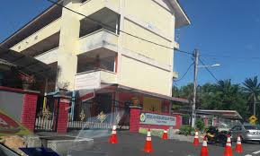 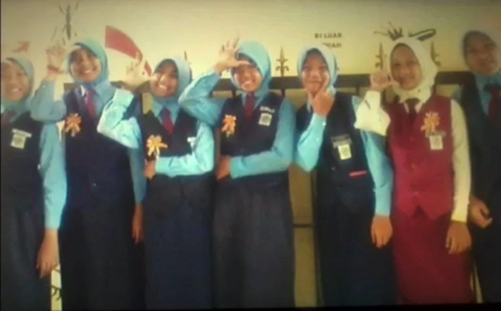
Maahad Ahmadi Gemencheh, better known as MANS, is a religious school, which is where I studied from 2015 to 2019. I took the tahfiz course and thank God I managed to memorize 30 juz Al-Quran in 2018, when I was form 4. This school was recommended by my father because he wanted me to memorize the Quran. I am very grateful for being given good and supportive friends and teachers throughout my journey of studying academic knowledge and memorizing the Al-Quran. The picture below shows some of my moments at Maahad Ahmadi with other friends.
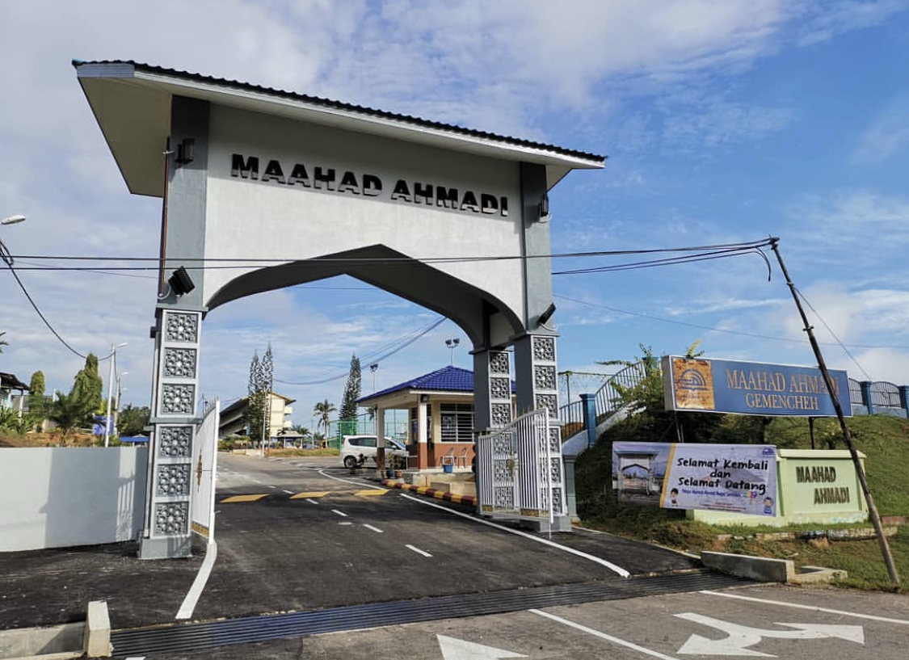 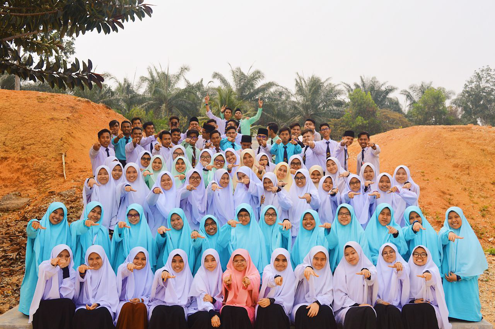 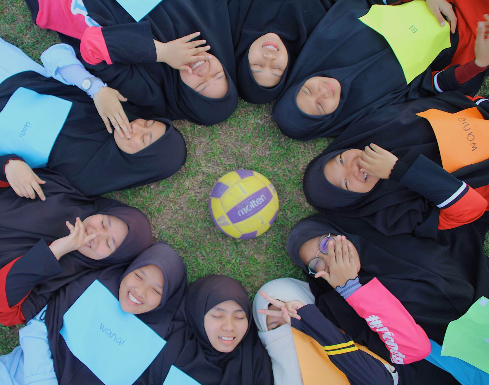 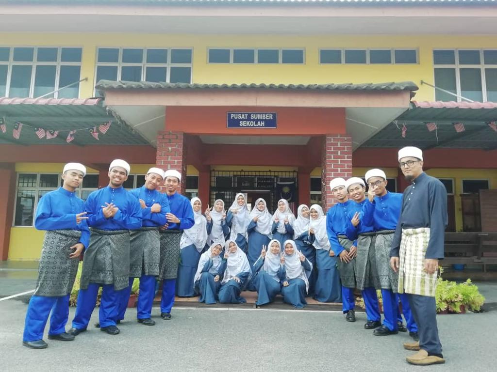 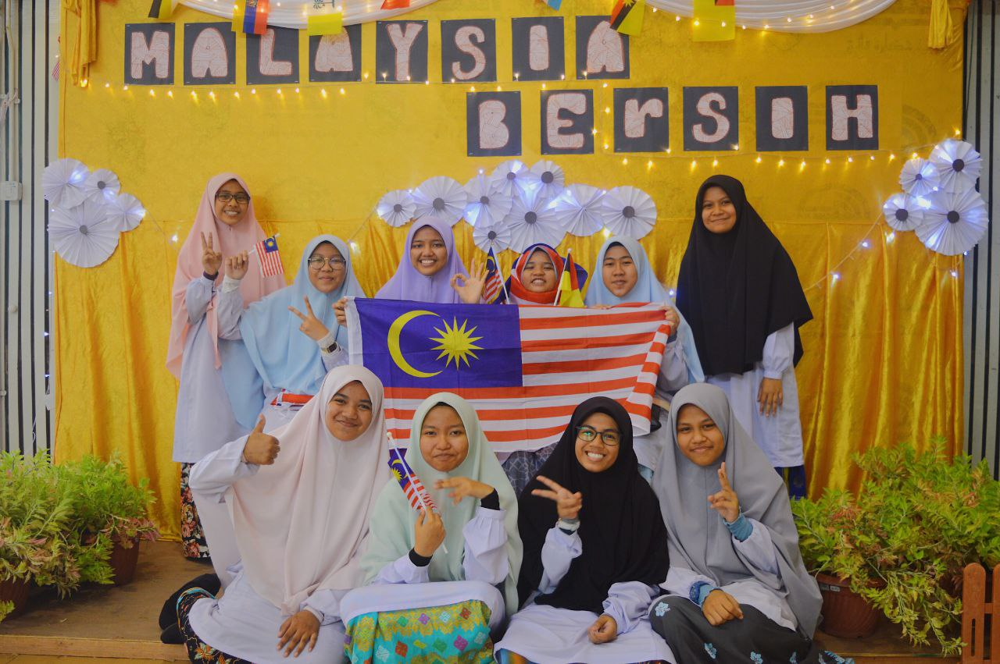
After finishing SPM, I applied to several universities to enter and finally UPU decided that I would be at UiTM Rembau Campus majoring in Information Management. I am very grateful and feel very lucky because it is very close from my house only about 15 minutes away. Starting from semester 1 until semester 3, we all only study online due to covid-19. Since semester 4, we have been allowed to come in and study face to face. Since then, I started getting to know other friends more deeply and getting closer to them. My diploma journey felt very fun and happy with the presence of friends who always understand each other
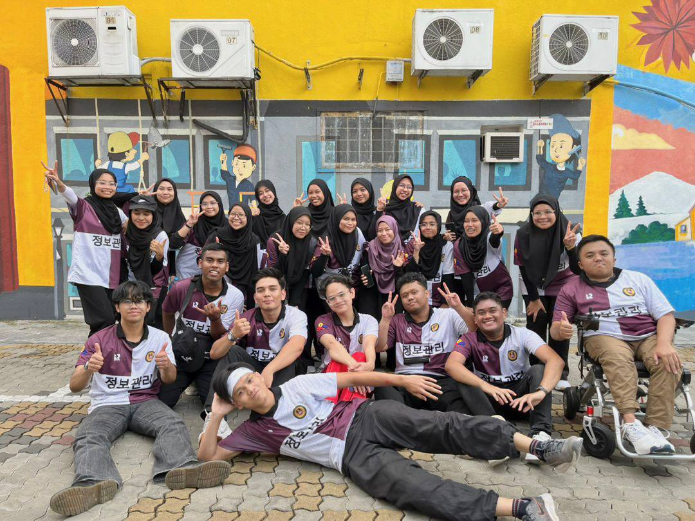 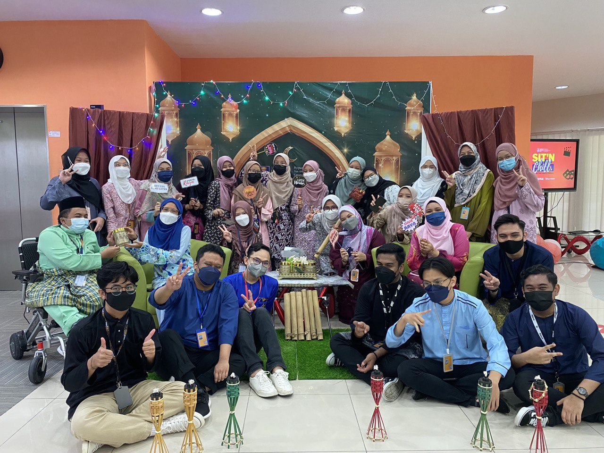 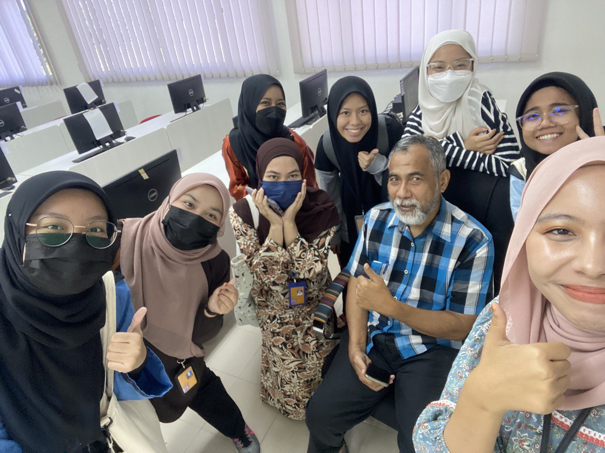 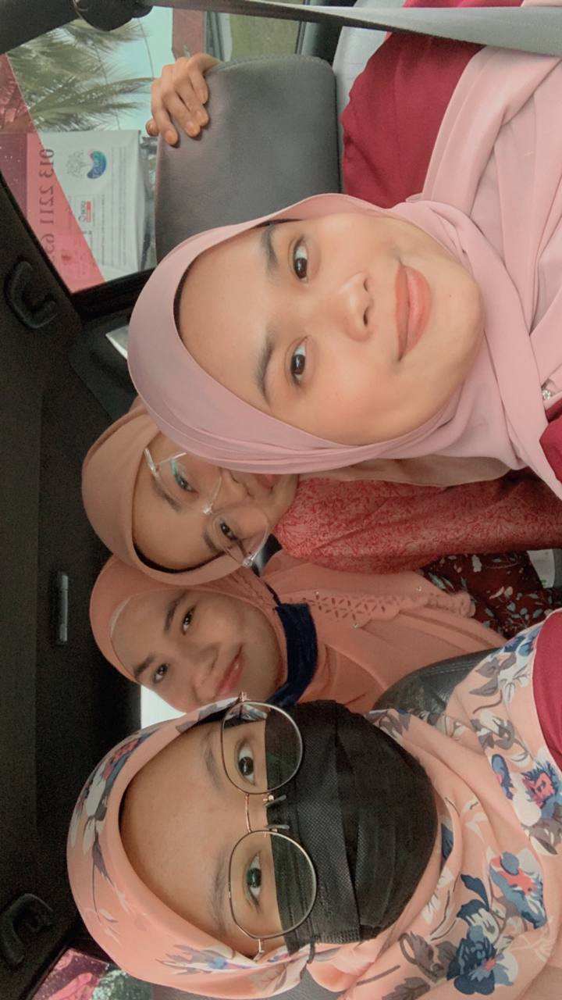